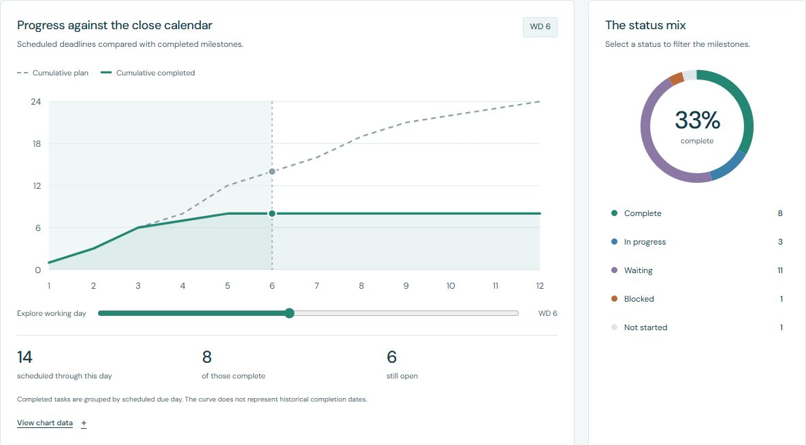
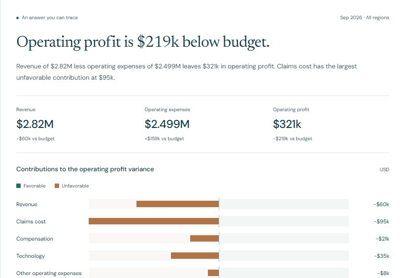
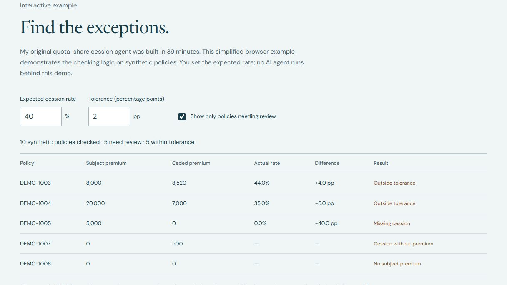
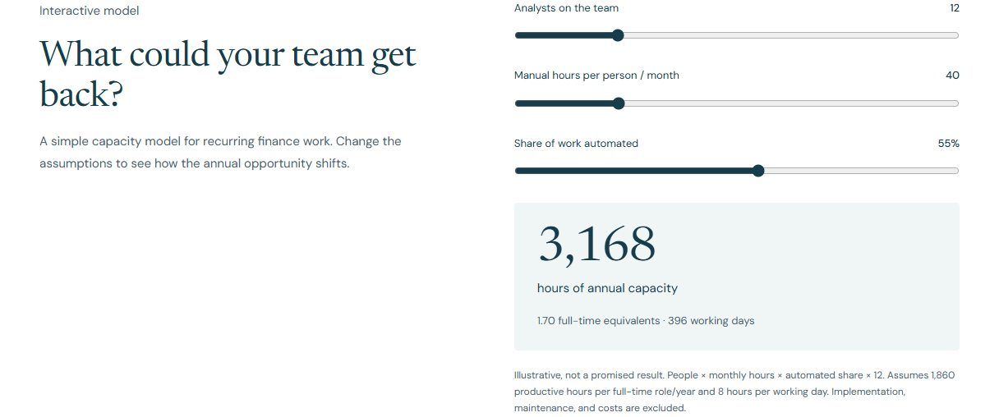
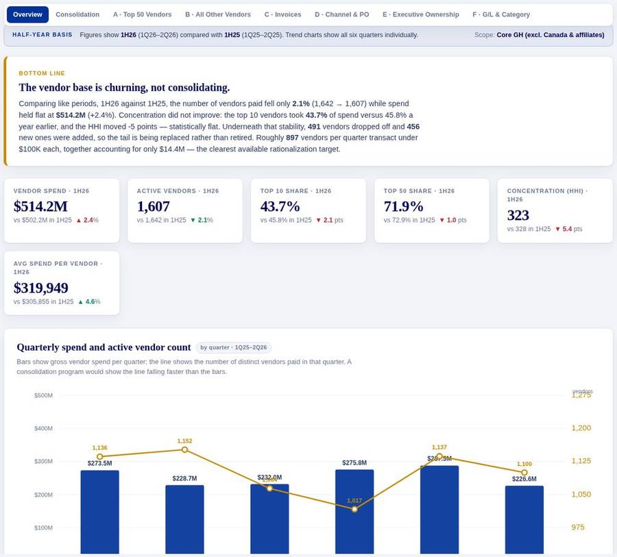
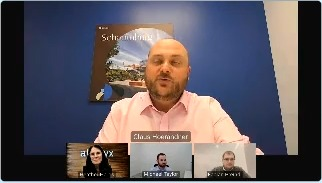

Close demo with fictional dataThe close, in one view
Track milestones, check dependencies, and see how close progress changes as work gets done.
Try the close demoDirector of Accounting at Assurant
Insurance finance leadership combining accounting and reporting expertise with a proven record of AI, automation, and finance transformation. My focus: reliable numbers, effective controls, and high-performing teams.
Experience and selected results
Chicago, Illinois · Remote
Explore five examples of how I use data, automation, and reporting to answer everyday finance questions.

Close demo with fictional dataTrack milestones, check dependencies, and see how close progress changes as work gets done.
Try the close demo
Agent simulation with fictional financial dataAsk about a budget variance, follow up about a region, and inspect the ledger behind the answer.
Try the finance agent
Cession check with synthetic policiesSet a target cession rate and tolerance to see which sample policies need review.
Try the cession check
Capacity model with sample assumptionsAdjust team size, manual hours, and the share of work automated to estimate the time you could free up each year.
Try the capacity model
Anonymized vendor spend dashboardSee how dashboards bring vendor spend, close progress, IFRS 17 reporting, and expense compliance into view.
Explore the dashboardsIn conversation with Alteryx
I joined guests from United Airlines and Hyatt to discuss how teams use data and AI to change the way they work.
Watch the panel
Watch the Alteryx panelFrom insurance accounting and management reporting to automation and enterprise-wide change.
October 2026 – present
Assurant
Helping modernize reporting capabilities and accelerate practical AI adoption across the organization.
March – October 2026
Zurich North America
Zurich tenure: 2005–2006, 2012–2026
Led finance transformation across finance departments, modernizing processes, tools, and ways of working. Supported the adoption of automation, AI, and advanced reporting.
April 2021 – March 2026
Zurich North America
Led a team of four analysts delivering management reporting. Directed automation and improvement projects, reallocating analyst time to higher-value work.
2012–2021
Zurich North America
Led the IFRS 4 to IFRS 17 management-reporting transition. Built reporting automations and dashboards for business leadership.
2007–2012
Farmers Insurance Group
Managed financial planning for a $440M IT infrastructure budget and served as Financial Project Lead on a $5B, ten-year sourcing program.
Earlier roles included Benefit Analyst at Lincoln Financial Group (2007), Financial Analyst / Planner at Zurich (2005–2006), and Research Assistant at Lake Forest College (2003–2004).
Economic research with Professor Rob Lemke; co-authored two peer-reviewed academic publications. [LINK TO PUBLICATIONS]
Trained finance professionals through Lunch & Learns, short-form videos, and practical demonstrations covering IFRS 17, automation, and AI.
Joined an Alteryx panel on data analytics and AI alongside participants from United Airlines and Hyatt.
Lake Forest College
Summa Cum Laude · Phi Beta Kappa
2006
Chartered Property Casualty Underwriter
Associate in Insurance Accounting & Finance
2025
Process improvement and quality management
Former board member · Chicago · 2023–2025
Supported culture, education, and community through a Chicago institution dedicated to German American heritage.
Founder · Zurich North America
Founded the committee to connect colleagues through learning, volunteering, and shared events.
About insurance finance, practical automation, or better ways for teams to work. I’m always glad to exchange ideas.